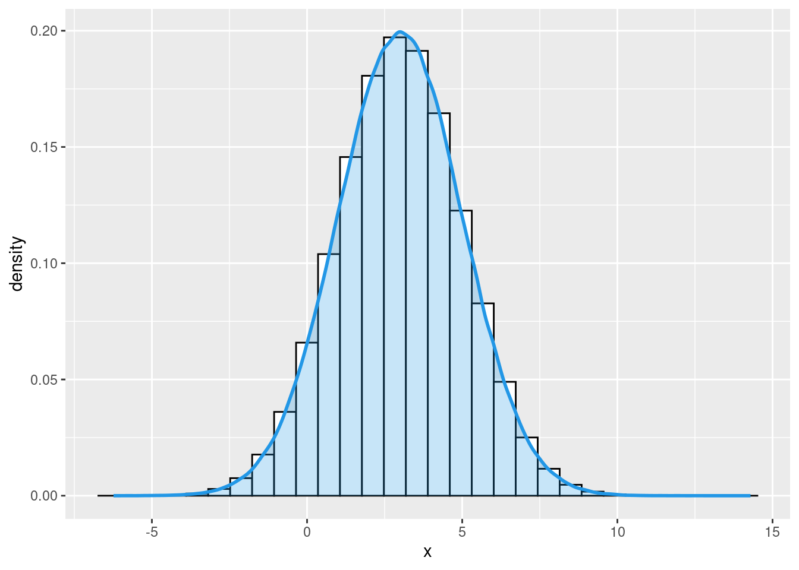
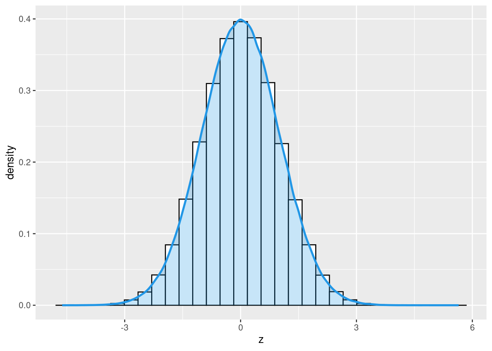
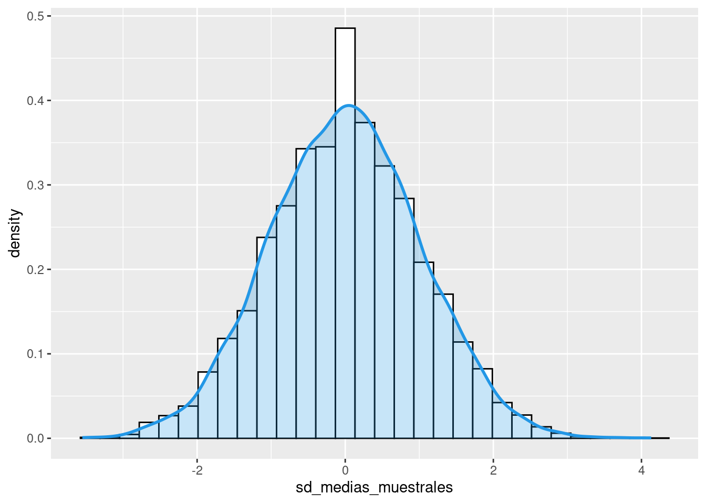

```{r}
## valores posibles
valores_posibles <- c(1,0) # 1 cara, 0 for sello
## Muestreso aleatorio de valores posibles
flip <- sample(valores_posibles, # vector
size=1000000, # 1 million de veces
replace=TRUE, # con reemplazo
prob=c(0.5,0.5)) # modeda justa
```En el presente ejericio seguiremos revisando la teoría de la probabilidad. En específico, revisamos las distribuciones de probabilidad, parámetros poblacionales y muestreo estadístico y el teorema del límtie central.
1 Probabilidad
1.1 Distribución Bernoulli.
En el siguiente ejercicio, creamos un vector de posibles valores, recogemos una muestra de 1 millon de “trials” con reemplazo y asignamos la probabilidad.
1.1.1 Vector y muestreo
1.1.2 Exploramos
Nota
Es probable que los valores en su consola no sean los valores exactos que se muestran en este código porque el objeto (vector) flip (y otros creados más abajo) se creó mediante un proceso aleatorio.
Creamos una tabla de proporciones, calculamos la media y la varianza.
```{r}
prop.table(table(flip)) # table de proporciones
mean(flip) # media
var(flip) # varianza
```flip
0 1
0.500192 0.499808
[1] 0.499808
[1] 0.25000021.2 Distribución normal
```{r, message=F}
library(tidyverse)
```Visualizamos la distribución normal de la variable reading en el data frame star.
```{r}
star <- read.csv("STAR.csv") # datos
# Histograma con densidad
star %>%
ggplot(aes(x = reading)) +
geom_histogram(aes(y = ..density..),
colour = 1, fill = "white", bins=30) +
geom_density(lwd = 1, colour = 4,
fill = 4, alpha = 0.25) +
theme_grey()
# hist(star$reading, freq=FALSE) # con r base
```1.3 Randomly sample from distribution N(3,4)
Creamos un vector con un tamaño de 1000000. Calculamos media, desviación estándar y grafiamos con ggplot.
```{r}
x <- rnorm(1000000, # tamaño de muestra
mean=3, # media
sd=2) # desviación estándar
``````{r}
# plot vector
ggplot() + aes(x)+
geom_histogram(aes(y = ..density..),
colour = 1, fill = "white", bins=30) +
geom_density(lwd = 1, colour = 4,
fill = 4, alpha = 0.25) +
theme_grey()
#hist(x, freq=FALSE) #rbase
mean(x) # media
var(x) # varianza
```[1] 3.001507
[1] 3.999709
1.4 Distribución normal estándar.
Calculamos las probabilidades de la distribución normal estándar.
```{r}
pnorm(-1.96) # probabilidad de Z menor o igual a -1,96
1 - pnorm(1.96) # probabilidad de Z mayor o igual a 1,96
pnorm(1.96) - pnorm(-1.96) # probabilidad de Z entre -1,96 y 1,96
## Cómo transformar una variable aleatoria normal en la variable aleatoria normal estándar
## creamos una variable aleatoria y estadarizamos
z <- (x - 3) / 2 # estarizamos x
```[1] 0.0249979
[1] 0.0249979
[1] 0.95000421.4.1 exploramos z
```{r}
# plot vector
ggplot() + aes(z)+
geom_histogram(aes(y = ..density..),
colour = 1, fill = "white", bins=30) +
geom_density(lwd = 1, colour = 4,
fill = 4, alpha = 0.25) +
theme_grey()
#hist(z, freq=FALSE) # rbase
mean(z) # media
var(z) # varianza
```[1] 0.0007534534
[1] 0.9999272
1.5 Calcuamos la probabilidad de N(3, 4) entre -0.92 y 6.92
```{r}
pnorm(6.92, mean=3, sd=2) -
pnorm(-0.92, mean=3, sd=2)
```[1] 0.95000421.6 Parámetros poblacionales VS. estadísticas de muestra
1.6.1 La ley de los grandes números.
```{r}
## Ejemplo con una variable aleatoria binaria
## Crear muestreos aleatorios a partir de una variable aleatoria
sample_1 <- sample(c(1,0), # valores posibles
size=10, # n=10
replace=TRUE, # con reemplazo
prob=c(0.6,0.4)) # probabilidades
sample_2 <- sample(c(1,0),
size=1000, # n=1,000
replace=TRUE,
prob=c(0.6,0.4))
sample_3 <- sample(c(1,0),
size=1000000, # n=1,000,000
replace=TRUE,
prob=c(0.6,0.4))
## Calcular medias muestrales
mean(sample_1) # n=10
mean(sample_2) # n=1,000
mean(sample_3) # n=1,000,000
```[1] 0.4
[1] 0.596
[1] 0.599841```{r}
## Ejemplo con una variable aleatoria normal
## crear muestreos elatorios con distribución normal
h_sample_1 <- rnorm(10, # n=10
mean=67, # población media = 67
sd=sqrt(14)) # varianza poblacional = 14
h_sample_2 <- rnorm(1000, # n=1,000
mean=67,
sd=sqrt(14))
h_sample_3 <- rnorm(1000000, # n=1,000,000
mean=67,
sd=sqrt(14))
## Calcular medias muestrales
mean(h_sample_1) # n=10
mean(h_sample_2) # n=1,000
mean(h_sample_3) # n=1,000,000
```[1] 65.61714
[1] 66.88137
[1] 66.99671.7 Teorema del límite central.
```{r}
## Ejemplo con una variable aleatoria binaria
## Crear un vector vacío para guardar medias de muestras estandarizadas
sd_medias_muestrales <- c()
## ejecutar un loop con 10000 iteraciones
for(i in 1:10000){
## Crear un muestreo aleatorio con 1000 observaciones.
## Con una variable binaria con p=0.6
respaldo_sample <- sample(c(1,0), # valores posibles
size=1000, # n=1,000
replace=TRUE, # con reemplazo
prob=c(0.6,0.4)) # probabilidades
## Calcular y guardar la media muestral estandarizada
sd_medias_muestrales[i] <-
(mean(respaldo_sample) - 0.60)/sqrt(0.24 / 1000)
}
## Create density histogram
# plot vector
ggplot() + aes(sd_medias_muestrales)+
geom_histogram(aes(y = ..density..),
colour = 1, fill = "white", bins=30) +
geom_density(lwd = 1, colour = 4,
fill = 4, alpha = 0.25) +
theme_grey()
#hist(sd_medias_muestrales, freq=FALSE)
```
2 Estructuras de control
Las estructuras de control en R permiten controlar el flujo de ejecución de las tareas programadas. Las más comunes son:
if/else: ejecutar o no un fragmento de código en función de una condición (muy utilizado para recodificar)for: ejecuta un bucle una cantidad fija de veces.while: ejecuta un bucle mientras sea verdadera una condición.repeat: ejecuta un bucle indefinidamente (la única forma de detenerlo es mediante el comando break).break: detiene la ejecución de un bucle.
next: salta a la siguiente ejecución de un bucle.
En este ejercicio nos enfocaremos en for. La estructura for permite ejecutar un bucle (loop), realizando una operación para cada elemento de un conjunto de datos.
Loops
```{r}
# for(elemento in `objeto`) {
# sentencia
# }
```La instrucción en un loop es la siguiente: Para cada elemento en el objeto, ejecute lal siguiente sentencia.
```{r}
x <- 1:5
y <- c()
for(i in 1:5){
y[i] <- x[i]^2
}
y
```[1] 1 4 9 16 25El resultado es el mismo si vectorizamos:
```{r}
x <- 1:5
y <- x^2
y
```[1] 1 4 9 16 25Loop es una manera “clásica” de programar iteraciones es importante entender la lógca que hay detrás. En sesiones futuras utilizaremos otras maneras más eficientes de programar iteraciones. En específico, utilizaremos funciones map del paquete purr para la vectorización de operaciones. Más detalles sobre como programar iteraciones siguiendo una orientación tidyverse en Wickham and Grolemund (2016), Wickham (2019), Imai and Williams (2022).
Wickham, Hadley, and Garrett Grolemund. 2016. R for Data Science: Import, Tidy, Transform, Visualize, and Model Data. First edition. Sebastopol, CA: O’Reilly.
Wickham, Hadley. 2019. Advanced r. CRC press.
Imai, Kosuke, and Nora Webb Williams. 2022. Quantitative Social Science: An Introduction in Tidyverse. Princeton University Press.
A continuación realizaremos 3 ejercicios de distribuciones de probabilidad utilizando la estructura for:
Ejecute un bucle for simple con 3 iteraciones imprimir el valor de i en cada iteración
```{r}
for(i in 1:3){
print(i) # imprimir en valor de i
}
```[1] 1
[1] 2
[1] 3Cambie el código que queremos que R ejecute repetidamente para que en cada iteración, R: (1) extrae una muestra aleatoria de 1000 observaciones de una variable binaria con p=0,5, y (2) calcula e imprime la media muestral
```{r}
for(i in 1:3){
## muestreo aleatorio of 1,000 observaciones
## de una variable binaria con p=0.5
flip <- sample(c(1,0), # posibles valores
size=1000, # n=1,000
replace=TRUE, # con reemplazo
prob=c(0.5,0.5)) # probabilidades
## Imprimir
print(mean(flip))
}
```[1] 0.525
[1] 0.512
[1] 0.512Cambie el código que queremos que R ejecute repetidamente para que en cada iteración, R: (1) extrae una muestra aleatoria de 1000 observaciones de una variable binaria con p=0,5, y (2) calcula y almacena la media muestral
```{r}
## Crear un vector vacío
sample_means <- c()
## loop 3 iteraciones
for(i in 1:3){
## extraer una muestra aleatoria de 1000 observaciones
## de una variable binaria con p=0,5
flip <- sample(c(1,0), # valores posibles
size=1000, # n=1,000
replace=TRUE, # con reemplazo
prob=c(0.5,0.5)) # probabilidades
## guardar
sample_means[i] <- mean(flip)
}
## revisar el contenido de `sample_means`
sample_means
```[1] 0.491 0.521 0.509Ejecutar el mismo bucle for pero con 10.000 iteraciones (en lugar de 3)
```{r}
for(i in 1:10000){
## muestreo de 1,000 observaciones
## para una variable binaria con p=0.5
flip <- sample(c(1,0), # valores posibles
size=1000, # n=1,000
replace=TRUE, # con reemplazo
prob=c(0.5,0.5)) # probabilidades
## store sample mean
sample_means[i] <- mean(flip)
}
# revisar vector
#sample_means
```